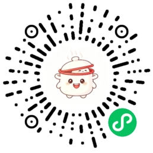

「今天吃什么」是大多数人每天都会卡壳的问题。出门买菜面对一整排食材不知道搭配，点外卖又常常又贵又腻，一个人做饭容易做多、做剩，想记录自己吃过什么却很难坚持。吃饭这件每天发生三次的小事，长期缺少一个轻量、有温度、能长期坚持的陪伴工具。
「心情菜谱日历」从这个真实日常出发：不做一个冷冰冰的菜谱搜索引擎，而是先关心「你现在是什么状态」，再由 AI 结合心情、口味偏好、家里现有食材和近期吃过的菜，给出一道当下合适的菜，并把每一次记录沉淀下来，最终长成属于用户自己的月度画册和年度干饭报告。
产品围绕一条主线设计：选心情 → AI 推荐一道菜 → 跟着做 / 记录这一餐 → 日历与画册沉淀 → AI 越用越懂你。
| 模块 | 解决的问题与做法 |
|---|---|
| 选一个心情吧 | 以心情作为选菜起点，代替「对着几百道菜无从下手」，降低决策压力。 |
| 今日推荐 | 结合心情、口味、时长、家里食材与近期记录，给出一道合适的菜，含食材、步骤、时长与难度；本地菜谱库作为兜底。 |
| 跟锅仔做菜 | 分步引导，分步讲解、可随时追问，边做边提醒，帮助第一次下厨的人完成一道菜。 |
| 记录今日伙食 | 随手记录一餐，可配图、备注，本地存储与云端同步，后端不可用时前端仍可演示。 |
| 食光日历 / 菜谱时光机 | 月视图回看吃过什么，时光机按时间线翻看过往记录。 |
| 月度画册 / 年度报告 | 月末自动汇总成专属画册，年末生成年度干饭报告（吃了多少顿、口味分布、常做菜系等）。 |
| 我的冰箱 | 登记家里现有食材，AI 推荐时优先利用库存，减少浪费与重复采购。 |
| 今日三餐 / 锅仔备餐小本 | 按天规划三餐、按周排菜，周菜单规划智能体观察—规划—验证—重试并本地修复。 |
| 锅仔管饭（AI 对话） | 多轮对话式点菜备餐，AI 动态追问、发现需求冲突、给出可选卡片并说明依据。 |
| 锅仔记忆 / 锅仔藏菜阁 / 推荐记录 | 沉淀个人口味偏好、收藏菜与历史推荐，让推荐持续贴合本人。 |
本作品不是「在菜谱页加一句 AI 生成」，而是把 AI 作为一个可持续协作、会记忆、会复盘的后厨助手，落在后端一个可观测的智能体系统里。
智能体按「思考 → 选择工具 → 执行 → 观察 → 再思考」循环推进，直到给出结论。供应商支持原生 function calling 时走原生工具调用；不支持时自动降级为 JSON 工具协议，因此切换大模型供应商不会让智能体退化成纯文本回答。
记忆带置信度、来源、证据与时效地写入；召回时按场景检索，过期或衰减到阈值以下的事实自动归档，不再进入提示词，避免记忆污染。
用户对一次推荐点「不满意」，模型会自己复盘会话、提炼教训，滚入滚动记忆窗口并在后续对话中注入——用户一次反馈，下一轮的行为就会不同。
后端采用分层 LLM 客户端与超时降级策略；模型不可用或调用失败时，自动回退到本地高质量菜谱库，保证小程序在任何情况下都能给出结果，而不是报错空白。
| 层 | 技术选型 | 说明 |
|---|---|---|
| 前端 | uni-app（Vue3 + Vite）+ Wot Design Uni v2 | 一套代码面向微信小程序，页面由 uni-pages 自动注册。 |
| 后端 | Spring Boot（Java 21） | RESTful 接口、JPA 持久化、全局异常处理与输入校验。 |
| 数据库 | MySQL 8 | 菜谱库、用户记录、偏好、智能体记忆与菜单结果分表存储。 |
| AI 层 | 兼容 OpenAI Chat Completions 的 LLM 客户端 + 自研智能体框架 | 工具协议兼容、分层降级、记忆与反思模块独立。 |
| 图片存储 | 腾讯云 COS（项目前缀隔离），未配置时回退本地目录 | 菜品/记录图与头像分目录存放，密钥只走环境变量，不入库不入仓。 |
「心情菜谱日历」希望成为一个愿意长期留在用户手机里的小工具：它不替用户做重大决策，只在「今天吃什么」这个每天三次的小关口，给一个合心情、合口味、合库存的建议，并把平淡的一日三餐，攒成一本可以回看的生活画册。后续计划继续加深 AI 与个人口味、营养目标、家庭场景的结合，让「与 AI 共生」落在真实的一日三餐里。